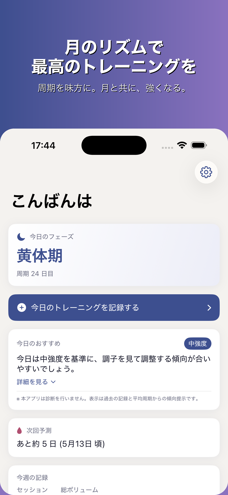
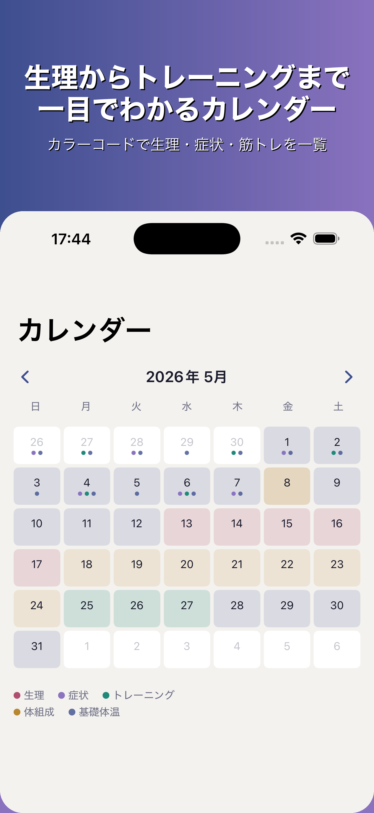
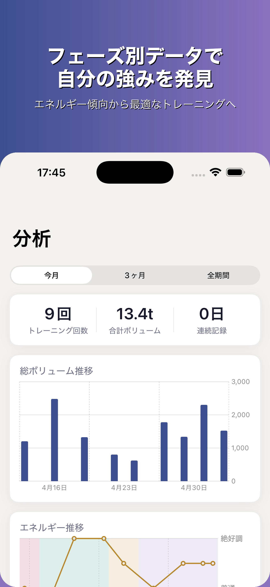
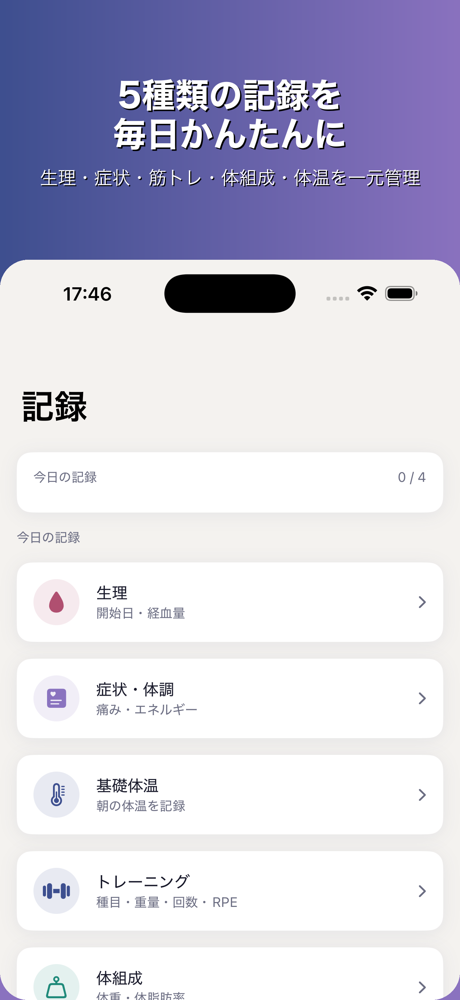

TsukiLift
月とともに、強くなる。
⬇️ App Store でダウンロード
iOS 17+ 対応
日本語
無料
月が海を動かすように、月のリズムが体を動かす。生理周期という自然のサイクルを知り、筋トレに活かす——それが TsukiLift のコンセプトです。あなたのリズムに合わせた記録と傾向で、今日の自分を最大限に引き出しましょう。
アプリの画面

今日のフェーズ＆推奨

カラーカレンダー

フェーズ別分析

5種類の記録
主な機能
生理周期
生理周期トラッキング
生理開始日・終了日・経血量・痛みをかんたん記録。過去の記録から周期を把握できます。
筋トレ
筋トレ記録
種目・重量・回数・RPE をセットごとに記録。1RM 推定やトレーニングテンプレートで効率アップ。
BBT
基礎体温（BBT）
毎朝の基礎体温を記録。体温推移のグラフで周期の変化を視覚的に確認できます。
体組成
体組成・コンディション
体重・体脂肪率・骨格筋量などを記録。気分・エネルギー・睡眠も合わせて管理できます。
HealthKit
HealthKit 連携
Apple ヘルスケアとの連携で、既存の健康データを TsukiLift に取り込めます（任意設定）。
プレミアム
高度な分析
周期フェーズ別のパフォーマンス傾向や詳細なインサイトで、トレーニングをさらに最適化。
こんな方に向いています
周期によって体調が変わると感じる方
フェーズ別のコンディション傾向を記録・確認して、自分のリズムを知ることができます。
筋トレを記録・継続したい方
重量・回数・RPEをセットごとに管理。1RM推定で成長を実感できます。
プライバシーを大切にしたい方
全データはデバイス内にのみ保存。クラウドや外部サーバーには一切送信しません。
一つのアプリで健康管理をまとめたい方
生理・BBT・症状・筋トレ・体組成を1アプリで管理。HealthKit連携も可能です。
🔒
あなたのデータは、あなただけのもの
- 全データはデバイス内にのみ保存
- 外部サーバー・クラウドへの送信はなし
- HealthKit 連携は任意。拒否しても全機能が使えます
✦ プレミアムで、さらに深く
¥290 / 月（税込）
年額 ¥2,380（税込）でさらにお得
- 周期フェーズ別パフォーマンス分析
- 無制限のトレーニングテンプレート
- 高度なコンディション推奨
- 詳細な傾向グラフ
基本記録機能はすべて無料でご利用いただけます
無料・iOS 17 以降 / iPhone 対応